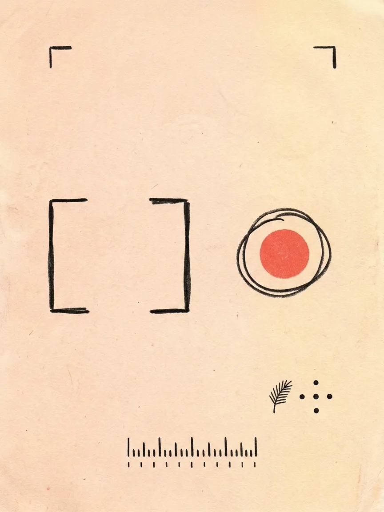
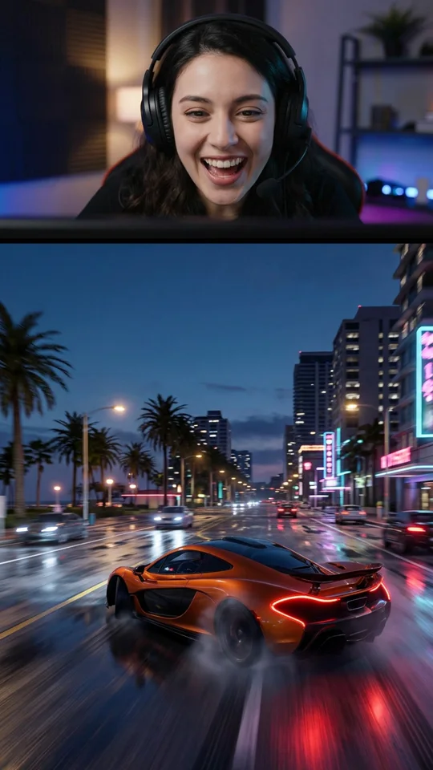
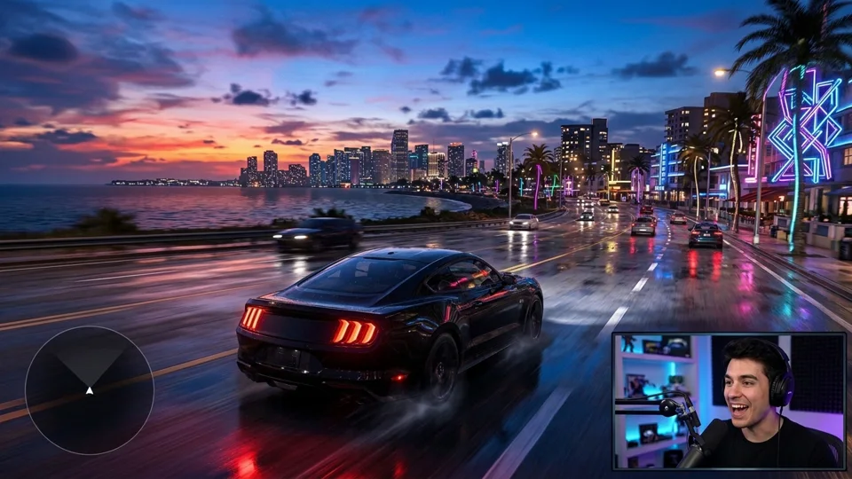

AutoClip
首页
6 大来源
高光切法
三步上手
GitHub
简体中文
English
日本語
한국어
Español
Português (Brasil)
Русский
Français
抢先准备
游戏直播切片
v1.6.0 即将发布
下播即出片，
高光自动留。
关注 1.6.0 发布
先装桌面版熟悉流程
1.6.0 预告 · 支持 macOS / Windows · MIT 开源

OBS 已连接 · 1.6.0
重播
GTA6_罪恶都市通宵实况.mkv
04:18:22 · 16.4 GB · 本地录像
已下播
抖音
B 站
TikTok
Shorts
下播后自动开始处理
自动接管
裁掉开播前后私人桌面
秒级完成
挑出高光操作与第一反应
8–45s
导出各平台成片与文案
6 条待审
0:00
本机完成 · 无需上传原片

抖音
0:18
五星追车漂移反杀
B 站
0:26
残血弹反无伤过 Boss
TikTok
0:34
抢劫最后十秒翻车
6 大直播回放来源
不管你用什么开播，下播后都进同一条流水线。
全品类游戏实况
一场长直播，自动剪出各平台成片。

Twitch / OBS 直播原片
8:36:14
自动识别高光 + 主播摄像头分屏重排
AutoClip 1.6.0
YouTube / B 站 · 16:9
黄金海岸隐藏路线讲解
0:48 · 横屏攻略
抖音 · 9:16
五星追车反杀
0:18 · GTA 6
B 站 · 9:16
残血无伤过 Boss
0:26 · 动作大作
TikTok / Shorts
抢劫十秒翻车
0:34 · 开黑
8s+ 短动作保留
短漂移与瞬间反杀不再被误删
留住第一反应
顺延保留主播和队友的尖叫大笑
全品类通用
GTA 6、影之刃零、黑神话都能剪
横竖屏一次出齐
上摄像头下实况，封面文案全配好
上方为按真实 Twitch / B 站实况构图还原的 1.6.0 切片示意。1.6.0 发布后将陆续收录真实主播实测成片，欢迎投稿进入官网案例库。
投稿你的游戏切片 →
为什么换掉老办法
不用凌晨三点拖时间线，也不用排队传云端。
手动翻录像
云端订阅工具
正在上传 16.4 GB...
24% · 排队中
热门时段云端排队
按月订阅 $19–$49
AutoClip 1.6.0
下播自动接管
0 秒
秒级裁剪
8–45s
无月费
三分钟接入你的直播间
今晚开播前花三分钟设好，下播直接去睡。
01
02
03
本地开源 vs 云端订阅
热门大作连播，最不需要的是上传排队和月费账单。
AutoClip 1.6.0
云端游戏切片订阅工具
v1.6.0 即将发布
先装好 AutoClip，1.6.0 一发就接管你的实况录像。
前往 GitHub Releases 关注 1.6.0
查看首页完整介绍
macOS
v1.5.9 · 405 MB
先下载 macOS 版 (.dmg)
Windows
v1.5.9 · 198 MB
先下载 Windows 版 (.exe)
叫上一起开黑的主播和剪辑师
复制本页链接发到开黑群、Discord 或工作室群，1.6.0 发布前提前装好。
复制本页链接